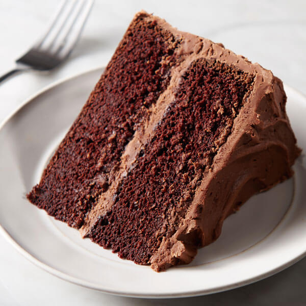

Best Chocolate Cake
This is the best and most easiest cake recipe ever!

Ingredients
- butter and flour for coating and dusting the cake pan
- 3 cups all-purpose flour
- 3 cups granulated sugar
- 1 1/2 cups unsweetened cocoa powder
- 1 tablespoon baking soda
- 1 1/2 teaspoons baking powder
- 1 1/2 teaspoons salt
- 4 large eggs
- 1 1/2 cups buttermilk
- 1 1/2 cups warm water
- 1/2 cup vegetable oil
- 2 teaspoons vanilla extract
Directions
- Preheat oven to 350 degrees Fahrenheit. Butter three 9-inch cake rounds. Dust with flour and tap out the excess.
- Mix together flour, sugar, cocoa, baking soda, baking powder, and salt in a stand mixer using a low speed until combined.
- Add eggs, buttermilk, warm water, oil, and vanilla. Beat on a medium speed until smooth. This should take just a couple of minutes.
- Divide batter among the three pans. I found that it took just over 3 cups of the batter to divide it evenly.
- Bake for 30-35 minutes in a 350 degree oven until a toothpick inserted into the center comes out clean.
- Cool on wire racks for 15 minutes and then turn out the cakes onto the racks and allow to cool completely.
- Frost with your favorite frosting and enjoy!
Nutrition Facts
Per Serving:
Calories: 767kcal; Carbohydrates: 119g; Protein: 8g; Fat: 33g; Saturated Fat: 21g; Cholesterol: 105mg; Sodium: 668mg; Potassium: 383mg; Fiber: 5g; Sugar: 91g; Vitamin A: 825IU; Calcium: 96mg; Iron: 3.7mg